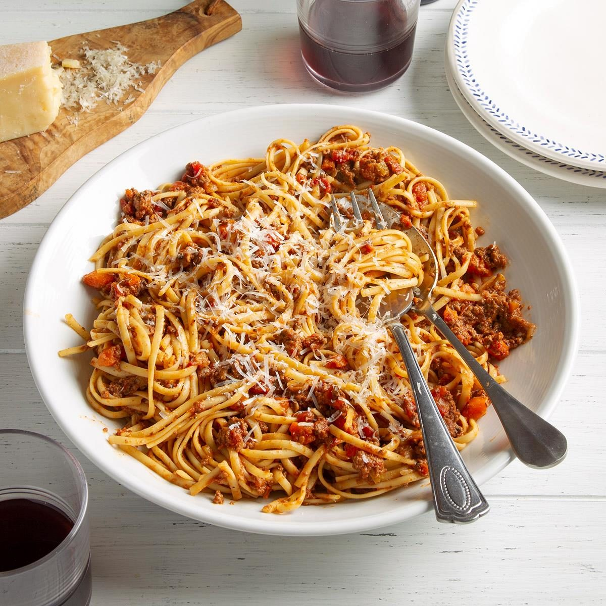

Bolognese

Description
Another easy recipe from Italian kitchen, one of my favourites the Bolognese that you can eat with pasta of your
choice.
A few ingredients go a long way if you combine them like Italians do.
Ingredients
- Pasta
- Water
- Minced meat
- Tomato sauce
- Onion
- Salt
- Oregano
Preparation
- Take a cooking pot and put a bit of oil into it
- Cut the onion into small cubes and let it sizzle on heat
- When they start to look glassy, put the meat in together
- Let the meat cook until white
- Pour in the tomato sauce
- Let it boil and turn the heat down
- Sprinkle a bit of salt to your liking
- Spice with oregano
Back to top
Return to main page